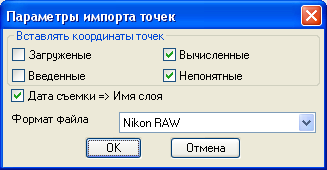

Команда: inport_file_to_be_cogo_points
Команда: inport_file_to_be_cogo_pointsИмпортирует точки из файла, форматов Nikon,CDR33,GSI
Предполагается использовать эту кнопку при импорте файлов координат вычисленных в приборе. Исключение Nikon RAW здесь сырые данные вычисляются программой, но не уравниваются. Координаты точек стояния и наведения должны присутствовать в файле.Команда: inport_file_to_be_cogo_points


При выборе Форматом файла Nikin RAW доступны настройки:
Поля Вставлять координаты точек позволяют вставлять в чертеж или игнорировать определенные типы точек:
Загруженые - точки координаты которых были загружены в прибор с наружи.
Введенные - точки вбитые в прибор в процессе работы.
Вычисленные - полученые в ходе съемки.
Непонятные - точки происхождение которых не удалось определить(на всякий пожарный).
Так как формат Nikon RAW содержит информацию о дате и времени каждого измерения есть возможность с помощью галочки Дата съемки => Имя слоя поместить каждую точку на слой с именем даты съемки. В противном случае имя слоя будет соответствовать имени импортируемого файла. Для всех остальных форматов всегда имя слоя соответствует имени файла.
стандартное окно открыть... для указания файла
Каталогом для открытия файла по умолчанию предлагается расположение текущего файла чертежа если файл еще не был сохранен будет выбрана папка Мои документы текущего пользователя.
 указывает импортируемый файл
указывает импортируемый файл
Происходит импорт точки уже имеющиеся на чертеже (полное совпадение по всем координатам) пропускаются новые вставляются. По завершении выдается отчет вида:
Вставлено количество точек
Пропущено количество точек
Номер cogo-точки задается автокадом. Описание cogo-точки выглядит как описание с прибора плюс в квадратных скобках номер точки из прибора (пример: LUK[1024]).
Команда: ldata
Выбери объект:
Выбирает cogo-точку
(("time" . "14:26:00") время измерения
("prism" . "10") постоянная призмы
("name" . "2004") номер(имя) отчки в приборе
("h-target" . 2.0) высота цели(отражателя)
("genesis" . "calculation") происхождение точки
("data" . "2013.02.08") дата измерения
("code" . "LUK")) описание в приборе
Сделал для пробы - иногда нужно по быстрому глянуть высоту отражателя у "подозрительной" точки. Если надо сделаю кнопку с нормальным выводом информации. Пример приведен для импортированной точки с формата Nikin RAW для остальных форматов данных поменьше.